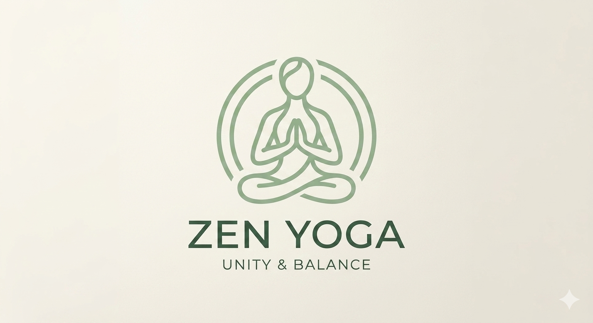
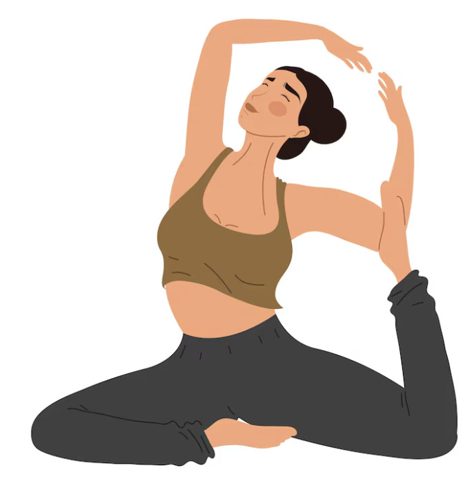
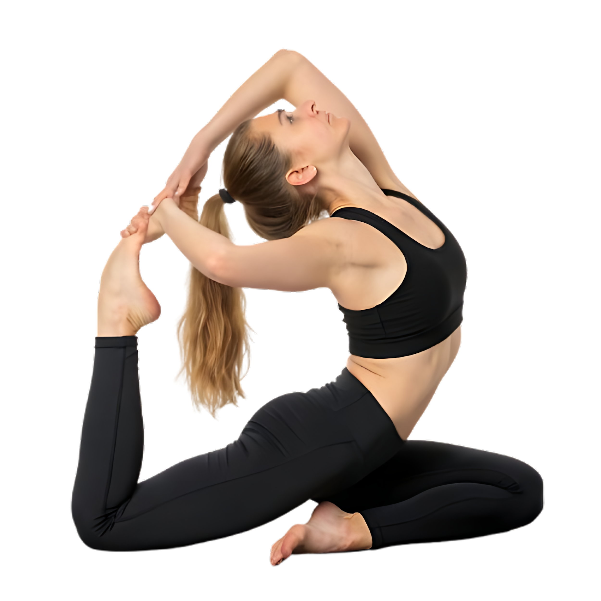
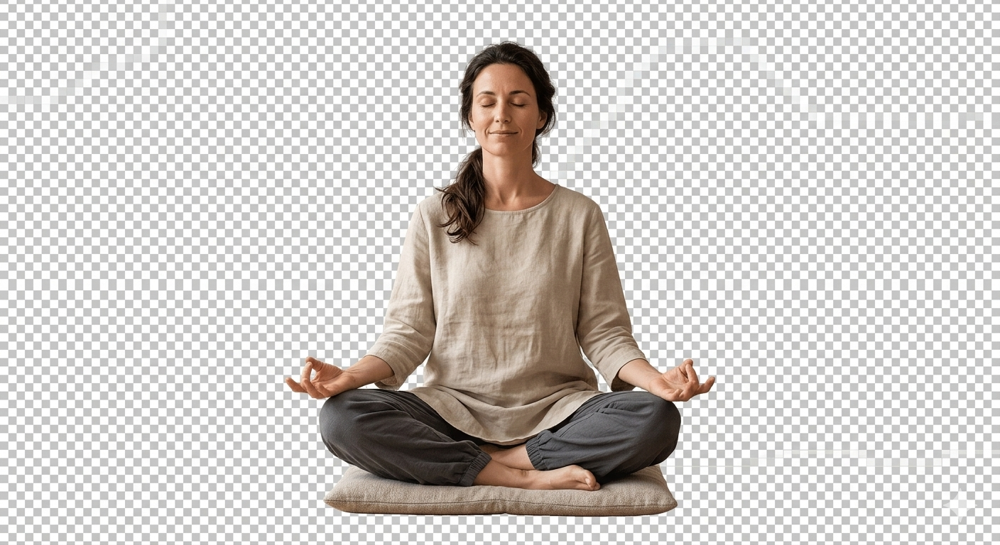
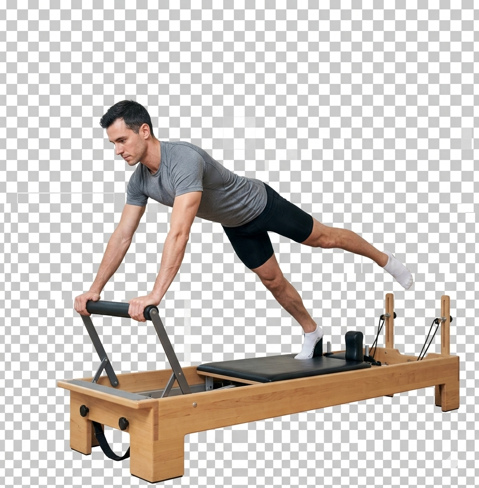
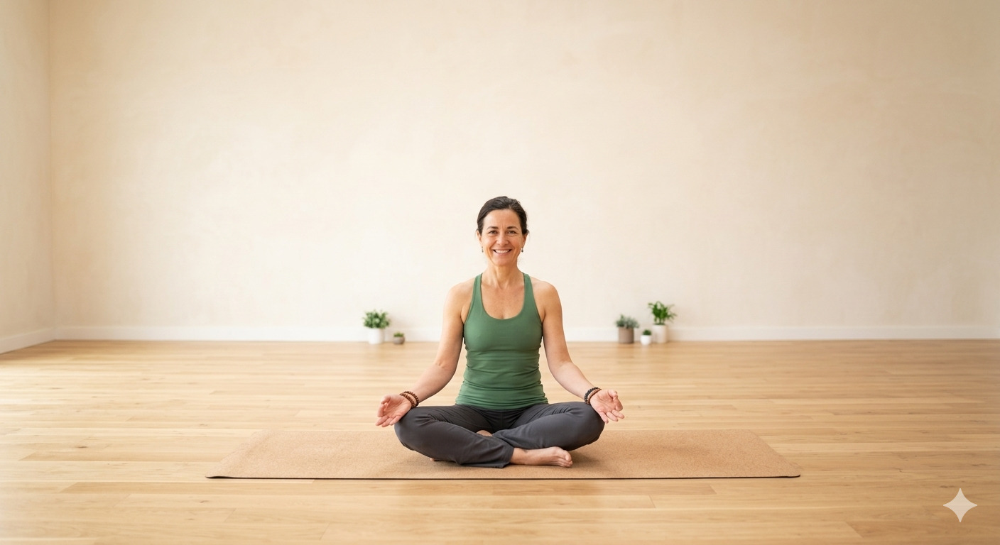

La Zen Yoga, credem că echilibrul dintre corp și minte este cheia unei vieți sănătoase. Oferim programe de yoga adaptate pentru toate nivelurile, într-un mediu relaxant și prietenos. Indiferent dacă ești începător sau avansat, te vom ghida pas cu pas.

Yoga combină mișcarea cu respirația pentru a îmbunătăți flexibilitatea, echilibrul și starea de relaxare. Potrivită pentru orice nivel.

Meditația reduce stresul și îmbunătățește concentrarea. O metodă simplă pentru liniște și echilibru interior.

Pilates ajută la tonifierea corpului și îmbunătățirea posturii. Exerciții controlate, ideale pentru un corp sănătos.
La Zen Yoga oferim o gamă variată de servicii menite să îți îmbunătățească starea fizică și mentală. Fie că dorești relaxare, tonifiere sau echilibru interior, avem soluția potrivită pentru tine.

Zen Yoga este un centru dedicat sănătății și armoniei. Instructorii noștri au experiență și pasiune pentru ceea ce fac, oferind suport fiecărui participant. Ne dorim să creăm un spațiu unde fiecare persoană se poate regăsi și evolua.